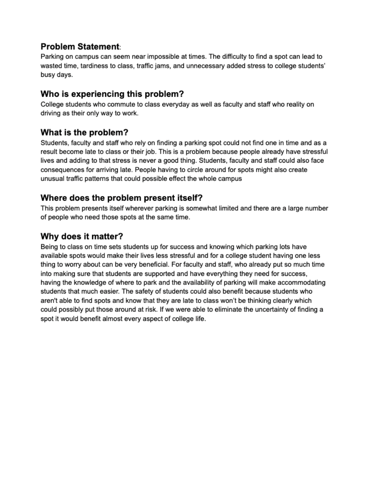

Parking on campus can seem near impossible at times. The difficulty to find a spot can lead to wasted time, tardiness to class, traffic jams, and unnecessary added stress to college students’ busy days.